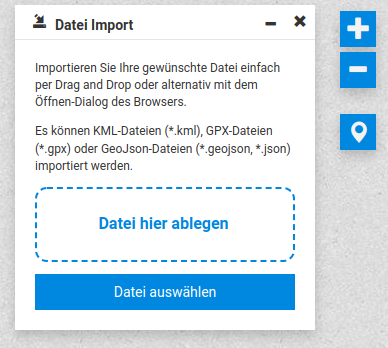

Erweiterte Konfiguration
1. UseCase
Ich möchte die Hauptfarben des Portals anpassen! Die Buttons sollen nicht rot, sondern blau sein - da dies besser zu unserem StyleGuide passt. 
Überlegung:
Es gibt im Ordner mastercode/2_30_0/css eine masterportal.css. Kann ich nicht einfach hier den Farbwert überschreiben? 
 Woher weiß man, welche CSS-Properties alle angepasst werden? Die css Datei > 2.500 Zeilen und > 300.000 Zeichen!
Woher weiß man, welche CSS-Properties alle angepasst werden? Die css Datei > 2.500 Zeilen und > 300.000 Zeichen!
 Keine gute Idee! Bei einem Update kann sich die Datei ändern - und man muss alle Anpassungen überprüfen / erneut durchführen..
Keine gute Idee! Bei einem Update kann sich die Datei ändern - und man muss alle Anpassungen überprüfen / erneut durchführen..
Daher:
Wir passen eine zentrale Farbvariable an im Development Modus und bauen hinterher unser Portal neu! 
Öffnen Sie im Code-Editor die Datei
variables.scss. Hier befinden sich sämtliche Farbwerte, aus denen die einzelnen Oberflächenelemente referenziert werden (Buttons, Hintergründe von Schaltflächen etc.).Suchen sie nach dem Key
$primary(Tipp: Zeile 94 ).
).Passen Sie den Wert an. Zum Beispiel auf Hellblau:
#0087e0.Webpack erkennt, dass Sie eine Änderung vorgenommen haben und kompiliert den Code erneut. Das Ergebnis ist sofort sichtbar unter
localhost:9001/portal/basic. Jetzt sind die Map-Controls blau, aber was ist mit den Tool-Buttons? Ich meine explizit das Tool Datei-Import.Passen Sie die folgenden Variablen an:
$secondary_focus: #0087e0;$accent: #0087e0;$accent_hover: darken($accent, 5%);Betrachten Sie das Ergebnis:  Nun ist der Footer noch blassgrau. Ich möchte diesen gerne ebenfall blau haben.
⚠️ Warning Ändern Sie nicht zu viele Farbwerte. Die EntwicklerInnen des Masterportals und des Oberflächen-Frameworks (Bootstrap) haben sich bei der Wahl der Farben viele Gedanken gemacht. Es werden auch extra barrierearme color schemes verwendet, dies sollte bedacht werden. Es sollte auch immer betrachtet werden, welche Farbwerte voneinander abhängen!
Goldene Regel: Nach jeder Änderung, ausführlich das Portal testen!
2. UseCase
Der MapMarker beim GFI ist schön und hat einen hohen Wiedererkennungswert. Trotzdem brauche ich für ein Spezial-Portal einen Custom-Marker Style.  Was kann ich tun?
Was kann ich tun?
- Schauen Sie in der
config.js.mdnach dem StichwortmapMarker. Sie finden dort folgende Erläuterungen:
| Name | Required | Type | Default | Description |
|---|---|---|---|---|
| pointStyleId | no | String | "defaultMapMarkerPoint" |
StyleId to refer to a style.json point style. If not set, the img/mapMarker.svg is used. |
| polygonStyleId | no | String | "defaultMapMarkerPolygon" |
StyleId to refer to a style.json polygon style. |
Example:
{
"mapMarker": {
"pointStyleId": "customMapMarkerPoint",
"polygonStyleId": "customMapMarkerPolygon"
}
}
Aha! 
- Definieren Sie in der
style.jsoneinen Punkt Stil mit 3 Farbigen Kreisen:{ "styleId": "custom-point", "rules": [ { "style": { "circleRadius" : 10, "circleFillColor": [0, 132, 255, 1], "circleStrokeColor": [255, 102, 0, 1], "circleStrokeWidth": 5 } } ] } - Weisen Sie in der
config.jsdem PropertypointStyleIdden neuen Stilcustom-pointzu. - Hier muss das Dev-Setup ggf. neugestartet werden (Strg+C, dann erneut
npm run start), um den Effekt zu sehen.
3. UseCase
Ich hab auf der FOSSGIS 2022 in einigen Vorträgen vom Cloud-Optimized-GeoTIFF gehört und finde es interessant.
Nun habe ich gesehen, dass OpenLayers bereits mit dem Format umgehen kann. Wie bekomme ich das in mein Masterportal?
 Über ein Addon..
Über ein Addon..